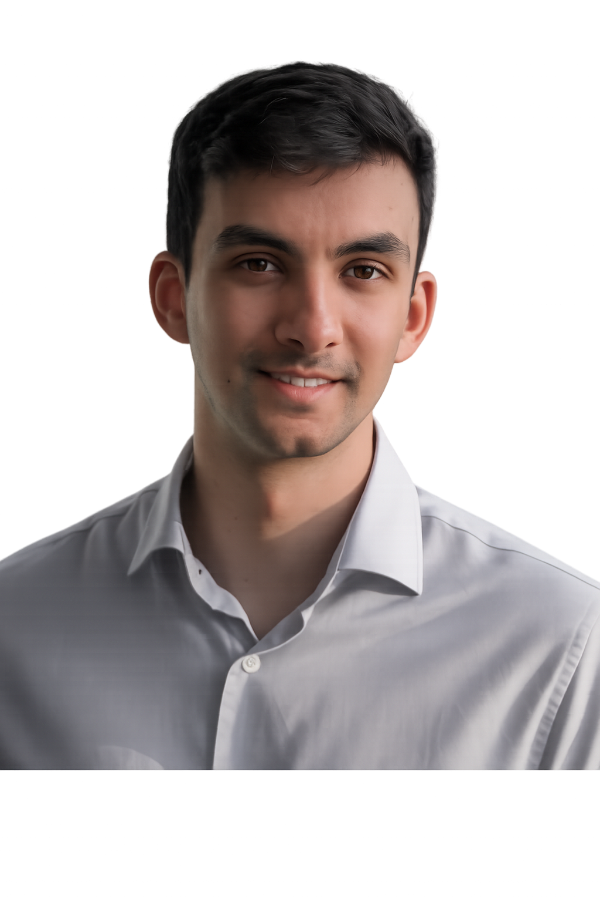

Hey, I'm Carlos
Welcome to my unapologetically diverse site.
I'm from Barcelona, but I've been living in Denmark for the past 7 years. Currently, I'm a Senior AI Project Manager at Grundfos and when possible I love to travel as much as I can and document everything with a worryingly amount of detail.

A career shaped by curiosity and craft.
Based in Denmark, I build AI and XR projects at Grundfos while keeping the rest of life open to unexpected learning and travel.
This site is a compact map of what I care about most — work, storytelling, and the places that keep me curious.
What I'm passionate about
For better or worse, my interests are incredibly diverse and have evolved considerably over time.
I'm someone who can become captivated by a completely new random topic and suddenly find myself immersed in videos about it around the clock — the rabbit hole is my friend :)
Despite this curiosity, there are three areas that I've been passionate about for a longer time.
I've centred this site around these three topics.
Travel
Interactive maps, flight logs, dive logs, and volunteering adventures across the globe. I document everything — obsessively.
Explore the map →Photography
Gallery, northern lights captures, and visual stories from around the world. Light, composition, and a bit of luck.
View gallery →Tech & AI
AI tools, XR experiences, 3D printing, and reality capture work from my career at Grundfos. The future, built today.
See projects →Career
Balancing the exploration and implementation of emerging XR and AI technologies within a well-established, water-focused global enterprise.
I have over 6 years of diverse industry experience gained through a rotation-based Graduate Program at Grundfos, which allowed me to explore topics like:
- Additive Manufacturing
- Product Management
- Sales Development
- XR and AI for Industry
I eventually chose the rapidly growing world of XR and AI for industry applications to continue my career.